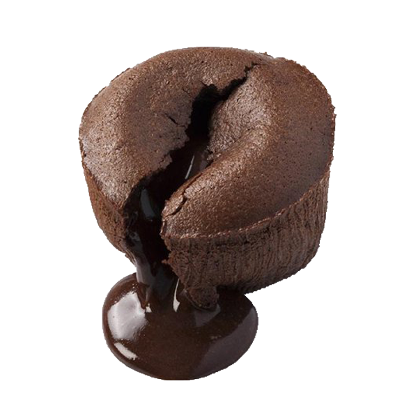
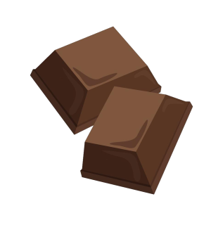

La recette du coulant au chocolat
(aussi dit, le meilleur dessert sur terre.)
Liste des ingrédients nécessaires pour 6 personnes:
- Pour les ramequins:


- 1 cuillère à soupe de farine
- 30g de beurre
-
Pour le coulant:

- 1 cuillère à café d'extrait de vanille

- 35g de farine

150g de chocolat noir à pâtissier
- 3 oeufs
- 80g de sucre
- 100g de beurre
Les étapes, dans l'ordre:
- Beurrez l'intérieur de vos ramequins et les placer 5 min au frigo.
- Saupoudrez l'intérieur de farine et retournez les pour faire tomber l'excédent.
- Cassez le chocolat en morceaux et faites le fondre au bain-marie.
- Hors du feu, ajoutez le beurre coupé en morceaux et mélangez.
- Fouettez les œufs et le sucre et incorporez le chocolat fondu, l'extrait de vanille puis la farine très délicatement.
- Répartissez la préparation dans les moules et placez les 1h au frigo.
- Préchauffez le four à 210°C. Placez les moules dans le four et laissez cuire 10 min.
- Mangez le! Conseil de la maison; avec de glace à la vanille